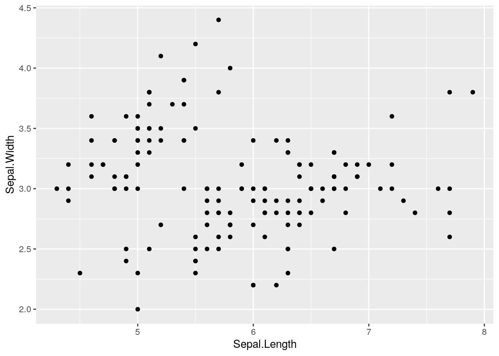

getwd()[1] "/home/nicolas/Documents/anf-metabarcoding/practicals"To install Cran R, you must go to https://cran.r-project.org/, and download the install file for your favorite operating system, click on the .exe, .dmg, .pkg, .deb, respectively for Windows, MacOS and Linux-debian.
And click on follow… until to reach successful installation Then download and install the IDE Rstudio https://www.rstudio.com/products/rstudio/.
Everything is free to download
Where am I?
To get the current working directory
getwd()[1] "/home/nicolas/Documents/anf-metabarcoding/practicals"To change my working directory from the console
setwd("/path/to/my/fancy/project/")In Rstudio, we can change the working directory by navigating in folder in File panel and clicking on menu More
If you are using a Rproject, you don’t to change your working directory.
How can I find documentation about function?
The command help() is the 911
# exemple with function read.table
help("read.table")
#other exemple of 911
example("plot")
??plot()You can install new packages by clicking directly in Rstudio or by command line (the best way for me)
install.packages("your_package") # for packages on CRAN mirrorFor packages from Bioconductor (specifically for bioinformatic):
BiocManager::install("your_package")or from github (using the package devtools)
devtools::install_github("your_package")To use functions from a specific package you can either load the entire package:
library("your_package")or call the function this way:
your_package::yourfunction()An expression is directly evaluated and the result is displayed on terminal Example :
2 + 3[1] 5sqrt(25)[1] 5An assignment is an expression stored in object or variable. In this example expression, constant, array, matrix, data frame, list Example :
a <- 2 + 3You can also assigned a expression to variable using =, like in most of other languages.
b = 3 + 3There are debates about which one to use. It is not really important which one you use, just be consistant and always use the same way to assign.
To list object/variable from your environment:
ls()[1] "a" "b"Vectors are objects composed by values with the same type (i.e, numeric, characters…)
V1 <- c(2, 6, 9) # numeric vector
V2 <- c("monday", "Tuesday", "Wednesday")# character vector
V3 <- rep(6, 3) # repetition of the same value
V4 <- seq(1, 3, 0.1)
V5 <- 1:100
V5 [1] 1 2 3 4 5 6 7 8 9 10 11 12 13 14 15 16 17 18
[19] 19 20 21 22 23 24 25 26 27 28 29 30 31 32 33 34 35 36
[37] 37 38 39 40 41 42 43 44 45 46 47 48 49 50 51 52 53 54
[55] 55 56 57 58 59 60 61 62 63 64 65 66 67 68 69 70 71 72
[73] 73 74 75 76 77 78 79 80 81 82 83 84 85 86 87 88 89 90
[91] 91 92 93 94 95 96 97 98 99 100To know the number of value inside a vector
length(V1)[1] 3What do you think about V4?
Filter a vector according to criteria
# Example : with list of value (a vector)
x <- c(1, 3, 5, 3, 2, 1, 4, 6, 4, 7, 5, 4, 3)
# get element from 2 to 6
x[2:6][1] 3 5 3 2 1# get elements 3 et 5 from x.
x[c(3, 5)][1] 5 2# get value more than 20.
x[x > 20]numeric(0)# get value of x where x is equal to 21.
x[x == 21]numeric(0)# return elements form x the the value different from 5
x[x != 5] [1] 1 3 3 2 1 4 6 4 7 4 3Filter a vector according to several criteria
# 3 lists : ages, sexes et poids
age <- c(20, 30, 40,
15, 22, 24,
36, 38)
sexe <- c("F", "M", "F",
"M", "F", "M",
"F", "M")
poids <- c(75, 76, 73,
72, 64, 76,
73, 72)
# get value from age greater than 20 and less than 30.
age[age > 20 & age < 30][1] 22 24# Recovering "poids" for those who are older than 25 and female
poids[age > 25 & sexe == "F"][1] 73 73#Retrieve age values below 20 or above 30.
age[age < 20 | age > 30][1] 40 15 36 38Exo1
Considering the vector a such as a <- c("lannister", "targaryen", "baratheon", "starck", "greyjoy")
What is the length of the vector?
Try doing a[1:3]. What do you get?
Create a new vector b containing only lannister and starck.
Try doing a[-1]. What do you get?
Sort by alphabetical order using sort()
Exo2
Create a vector a containing all integers from 1 to 100.
Add the values 200, 201, 202 to the vector a.
Create a vector b containing all even integers from 2 to 100 using seq()
Matrices are objects in which the elements are arranged in a two-dimensional rectangular layout. As for vector all the elements are of the same type.
m1 <- matrix(1:12, ncol = 3, byrow = TRUE)
m2 <- matrix(1:12, ncol = 3, byrow = FALSE)
m1 [,1] [,2] [,3]
[1,] 1 2 3
[2,] 4 5 6
[3,] 7 8 9
[4,] 10 11 12# to know the dimension of the matrix (number of line and number of column)
dim(m1)[1] 4 3ncol(m1)[1] 3nrow(m1)[1] 4Some operation on matrix
#Selection all data inside 2 column
c2 <- m1[, 2]
c2[1] 2 5 8 11#Select data inside 3th column and 4rd line
m1[4, 3][1] 12#delete a column
m3 <- m1[, -2]
m3 [,1] [,2]
[1,] 1 3
[2,] 4 6
[3,] 7 9
[4,] 10 12m3[2][1] 4Exo3
Run the command a <- rep(c(0,1), 50). What happened?
Use a to construct a matrix A with 10 rows and 10 columns.
Print the dimensions of this matrix.
Use t() on this matrix to create a matrix B. What happened?
The commands A[1:5, ] and B[, 1:5] retrieve the first 5 rows of A and the first 5 columns of B. Use these commands to retrieve the rows containing only 1s from A and the columns containing only 0s from B.
Exo 4 sup
\[M = \begin{bmatrix}3 & 5 & 6\\ -1 & 2 & 2 \\ 1 & -1 & -1 \\ \end{bmatrix}\]
A, its number of columns, its number of rows and its lengthA, then the first rowA using colSums(), rowSums()Data frames are objects composed by vector where the value are of different modes (i.e, numeric, characters…)
Load a data frame
data(iris)Visualise the data frame in a table
View(iris)Display its internal structure
str(iris)'data.frame': 150 obs. of 5 variables:
$ Sepal.Length: num 5.1 4.9 4.7 4.6 5 5.4 4.6 5 4.4 4.9 ...
$ Sepal.Width : num 3.5 3 3.2 3.1 3.6 3.9 3.4 3.4 2.9 3.1 ...
$ Petal.Length: num 1.4 1.4 1.3 1.5 1.4 1.7 1.4 1.5 1.4 1.5 ...
$ Petal.Width : num 0.2 0.2 0.2 0.2 0.2 0.4 0.3 0.2 0.2 0.1 ...
$ Species : Factor w/ 3 levels "setosa","versicolor",..: 1 1 1 1 1 1 1 1 1 1 ...What can we notice?
date <- c("1_monday", "2_Tuesday", "3_Wednesday",
"4_Thursday", "5_Friday", "6_Sturday",
"7_Sunday")
is.character(date)[1] TRUE# temperature in deg Celsius
temperature <- c(24, 27, 25,
22, 30, 21,
28)
is.numeric(temperature)[1] TRUE# rain in mm
rain <- c(1, 0, 0,
5, 2, 0,
0)
is.numeric(rain)[1] TRUE# add column together
df <- cbind(date, temperature, rain)
str(df) chr [1:7, 1:3] "1_monday" "2_Tuesday" "3_Wednesday" "4_Thursday" ...
- attr(*, "dimnames")=List of 2
..$ : NULL
..$ : chr [1:3] "date" "temperature" "rain"# make data.frame
df <- data.frame(date, temperature, rain)
str(df)'data.frame': 7 obs. of 3 variables:
$ date : chr "1_monday" "2_Tuesday" "3_Wednesday" "4_Thursday" ...
$ temperature: num 24 27 25 22 30 21 28
$ rain : num 1 0 0 5 2 0 0#Give me the difference between cbind() and data.frame()
View(df)
#To select a column or vector
df$temperature[1] 24 27 25 22 30 21 28df[, 2][1] 24 27 25 22 30 21 28# here we use list() instead of c()
# because there is multiple class in inside row
day <- list("8_monday", 29, 1)
new_def <- rbind(df, day)# add row to a data frame
new_def date temperature rain
1 1_monday 24 1
2 2_Tuesday 27 0
3 3_Wednesday 25 0
4 4_Thursday 22 5
5 5_Friday 30 2
6 6_Sturday 21 0
7 7_Sunday 28 0
8 8_monday 29 1dplyr is past of the set of libraries named tidyverse (contraction of “tidy” and “universe”, it’s a tidy universe). tidyverse packages are designed to work together and thus follow the same code logic and a common grammar.
The pipe, %>%, is one of the useful elements of the tidyverse. It allows to structure sequences of operations by minimizing the creation of intermediate objects and by facilitating the addition of a step anywhere in this sequence.
The most commonly used tidyverse packages are loaded in your session:
ggplot2dplyrtidyrreadrtibblestringrtidyverse::tidyverse_packages() [1] "broom" "cli" "crayon" "dbplyr"
[5] "dplyr" "dtplyr" "forcats" "ggplot2"
[9] "googledrive" "googlesheets4" "haven" "hms"
[13] "httr" "jsonlite" "lubridate" "magrittr"
[17] "modelr" "pillar" "purrr" "readr"
[21] "readxl" "reprex" "rlang" "rstudioapi"
[25] "rvest" "stringr" "tibble" "tidyr"
[29] "xml2" "tidyverse" library(tidyverse)── Attaching packages ─────────────────────────────────────── tidyverse 1.3.2 ──
✔ ggplot2 3.3.6 ✔ purrr 0.3.4
✔ tibble 3.1.8 ✔ dplyr 1.0.9
✔ tidyr 1.2.0 ✔ stringr 1.4.0
✔ readr 2.1.2 ✔ forcats 0.5.1
── Conflicts ────────────────────────────────────────── tidyverse_conflicts() ──
✖ dplyr::filter() masks stats::filter()
✖ dplyr::lag() masks stats::lag()#To select a variable with tidyverse
#Command line widely used to select data
iris$Sepal.Width %>%
head()[1] 3.5 3.0 3.2 3.1 3.6 3.9iris[, "Sepal.Width"] %>%
head()[1] 3.5 3.0 3.2 3.1 3.6 3.9#With dplyr
select(iris, Sepal.Width) %>%
head() Sepal.Width
1 3.5
2 3.0
3 3.2
4 3.1
5 3.6
6 3.9#Command line widely used to select data
iris[, c("Sepal.Length", "Sepal.Width", "Species")] %>%
head() Sepal.Length Sepal.Width Species
1 5.1 3.5 setosa
2 4.9 3.0 setosa
3 4.7 3.2 setosa
4 4.6 3.1 setosa
5 5.0 3.6 setosa
6 5.4 3.9 setosa#With tidyverse command
iris %>%
select(Sepal.Length, Sepal.Width, Species) %>%
head() Sepal.Length Sepal.Width Species
1 5.1 3.5 setosa
2 4.9 3.0 setosa
3 4.7 3.2 setosa
4 4.6 3.1 setosa
5 5.0 3.6 setosa
6 5.4 3.9 setosaTo sort and select data inside data frame
# Command line widely used to select data
iris[which(iris$Sepal.Width > 3 & iris$Species == "virginica"), ] %>%
head() Sepal.Length Sepal.Width Petal.Length Petal.Width Species
101 6.3 3.3 6.0 2.5 virginica
110 7.2 3.6 6.1 2.5 virginica
111 6.5 3.2 5.1 2.0 virginica
116 6.4 3.2 5.3 2.3 virginica
118 7.7 3.8 6.7 2.2 virginica
121 6.9 3.2 5.7 2.3 virginica#With tidyverse command
iris %>%
filter(Sepal.Width > 3) %>%
filter(Species == "virginica") %>%
head() Sepal.Length Sepal.Width Petal.Length Petal.Width Species
1 6.3 3.3 6.0 2.5 virginica
2 7.2 3.6 6.1 2.5 virginica
3 6.5 3.2 5.1 2.0 virginica
4 6.4 3.2 5.3 2.3 virginica
5 7.7 3.8 6.7 2.2 virginica
6 6.9 3.2 5.7 2.3 virginicaFunction are a compilation of command line with different instructions inside one object to simplify code. A function is composed by arguments and options.
function(argument1, argument2, option1, … ,option10)
head() # to know first line of your data frame
class()# return the class of the object. Ex : data.frame, matrix, list ....
str()# return the structure of the object. Ex : numeric, factor, character....
names()# to get or set the names of an object
sum() # for addition
min() # return the minimum of the vector
max() # return the minimum of the vector
row.names() # attribute names for lines of the data frame
colnames() # attribute names for column of the data frame
apply() # Returns a vector or array or list of values obtained by applying a function to margins of an array or matrix.Example function row.names, class and str
df2 <- data.frame(x = c(TRUE, FALSE, NA, NA), y = c(12, 34, 56, 78))
df2 x y
1 TRUE 12
2 FALSE 34
3 NA 56
4 NA 78row.names(df2) <- paste("row", 1 : 4, sep = "_")
df2 # what do you see x y
row_1 TRUE 12
row_2 FALSE 34
row_3 NA 56
row_4 NA 78class(df2)[1] "data.frame"str(df2)'data.frame': 4 obs. of 2 variables:
$ x: logi TRUE FALSE NA NA
$ y: num 12 34 56 78Example function apply
head(df) date temperature rain
1 1_monday 24 1
2 2_Tuesday 27 0
3 3_Wednesday 25 0
4 4_Thursday 22 5
5 5_Friday 30 2
6 6_Sturday 21 0class(df)[1] "data.frame"str(df)'data.frame': 7 obs. of 3 variables:
$ date : chr "1_monday" "2_Tuesday" "3_Wednesday" "4_Thursday" ...
$ temperature: num 24 27 25 22 30 21 28
$ rain : num 1 0 0 5 2 0 0# return mean for the numerical column of the data.frame. apply(data,margin,fun).
# For margin parameter the value 1 return mean for each row,
# for margin=2 return mean for each selected column.
apply(df[, 2:3], 2, mean)temperature rain
25.285714 1.142857 Example function plot
The function plot() is a very useful function to make a graph for examination for your data set
Let’s have a look at the documentation of this function ?plot
Exo 5
Load data set iris using data()
To import data set, the function read.table() or read.csv() are commonly used.
read.table(file, header = FALSE, sep = "", dec = ".", ...)
The main parameter are :
ds <- read.table(here::here("data",
"rforbeginers",
"exemple_read.txt"),
header = TRUE,
sep = ";",
dec = ",")Why I use the parameter header=TRUE ?
The function is similar to read.table()
write.table(x, file = "", sep = " ",na = "NA", dec = ".", ... )
write.table(ds, "ds.txt", sep = "\t", dec = ".")To keep our working directory tidy, we now delete ds.txt
file.remove("ds.txt")[1] TRUEWe load data set included in R
data("airquality")How can I check data ? before to plot, could you check the structure of data.frame
plot(airquality$Month, airquality$Ozone)
add label for each axes, change the symbol by square and color blue
boxplot(airquality$Ozone ~ airquality$Month,
col=c("orange", "yellow", "blue", "red", "green"))
Use of ggplot2 packages to generate smart plot
ggplot2 is part of tidyverse, so it is already loaded
g1 <- ggplot(data = airquality) +
geom_point(aes(Month, Ozone))
g1Warning: Removed 37 rows containing missing values (geom_point).
g2 <- ggplot(data = airquality) +
geom_point(aes(Month, Ozone), size = 3, colour = "red") +
theme_bw()
g2Warning: Removed 37 rows containing missing values (geom_point).
What do you notice?
df <- data.frame(airquality$Month, airquality$Temp)
df$airquality.Month <- as.factor(df$airquality.Month)
g3 <- ggplot(data = df, aes(x = airquality.Month, y = airquality.Temp)) +
geom_boxplot() +
theme_bw()
g3
g4 <- ggplot(data = df, aes(x = airquality.Month,
y = airquality.Temp,
color = airquality.Month)) +
geom_boxplot() +
theme_bw()
g4
Save your plot
Using the function pdf()
pdf("yourfile.pdf")
g4
dev.off()png
2 or ggplot2::ggsave()
ggsave("yourfile2.pdf", g4)Saving 7 x 5 in imagelist.files(pattern = ".pdf") %>%
file.remove()[1] TRUE TRUEdata("BCI", package = "vegan")
chart <- apply(BCI, 2, sum)
selection1 <- chart[1:30]
dotchart(selection1, cex = 0.7, bg = "blue")
row.label <- names(selection1)
df2 <- data.frame(row.label, selection1)
ggplot(df2) +
geom_point(aes(x = selection1, y = row.label))
g6 <- ggplot(df2, aes(x = selection1, y = row.label)) +
labs(tag = "A", x = "Species", y = "Count")
g6 +
geom_bar(stat = "identity")
g6 +
geom_bar(stat = "identity", color = "lightblue", bg = "lightblue")
Save this plot using command ggsave(). The documentation is your best friend.
Exo6
We propose to evaluate the effect of a vitamin treatment supposed to make students more resistant to fatigue during exams.
To do this, different students are tested: a score out of 10 is attributed to them and expresses the degree of rest called here “Acuity”, 0 for very tired and 10 for in full form.
10 students take a treatment (Treatment = “O” for “Yes”) and their fatigue is evaluated every day during 5 days of intense revision where the fatigue increases progressively.
10 students take a placebo (Treatment = “N” for “No”) and their fatigue is assessed every day for 5 days.
Load the table “exercise6.txt”. This table has a header and a tab separation.
Plot the tiredness (here “Fatigue”) as a function of time for all tested individuals. Display the treated individuals in blue and the untreated ones in red (see example). (To filter data set use by() function)
Try with ggplot
Save your plot as a pdf